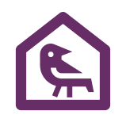
Odin’s Haven
Smart Home App
Individual Project
12 Weeks
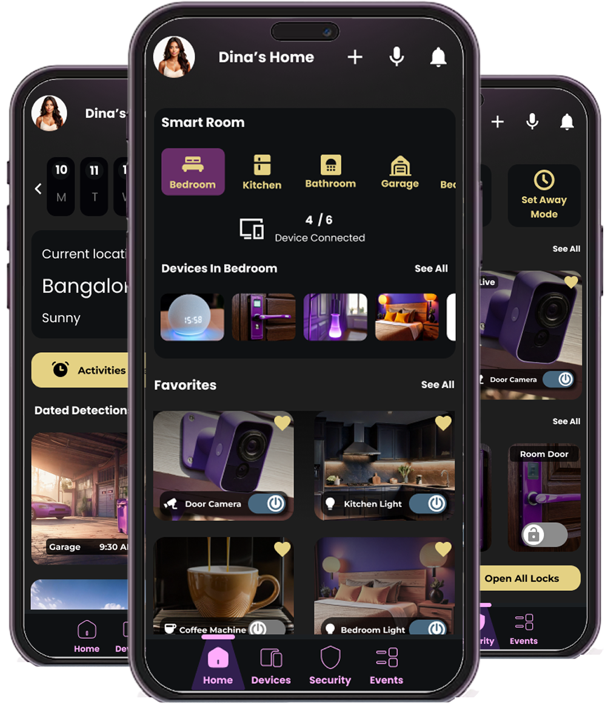
Tools Used
User Research
Overview
Smart home technology is becoming more accessible, yet everyday users still find it difficult to manage multiple devices, ensure home security, and maintain convenience without complexity. Many rely on separate apps for cameras, locks, lighting, and appliance control, resulting in a fragmented and overwhelming experience. This project explores the need for a unified, intuitive, and reliable smart home system that simplifies daily routines, enhances security, and adapts to the unique lifestyles of home makers, busy professionals, travellers, and pet owners.
Secondary Research
Users reported difficulty managing their smart homes due to scattered controls across multiple apps, leading to confusion and missed alerts. Research highlights the need for a single, unified interface that offers faster actions, clearer notifications, and seamless device management.
User Insights
Home Maker
“Switching between different apps for my devices is confusing. I just want one place to control everything.”
Traveller
“When I travel, I need instant access to camera feeds and alerts to know my home is safe.”
Worker
“My schedule is tight. I want quick actions like locking the door or checking alerts in one tap.”
Pet Owner
“I need the system to tell pet movement apart from real security issues to avoid false alarms.”
User Personas


Problem Definition
Final Problem Statement
“Everyday users find it difficult to manage multiple devices, ensure home security, and maintain convenience without complexity. Many rely on separate apps for cameras, locks, lighting, and appliance control, resulting in a fragmented and overwhelming experience.”
Pain Points Summary
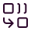
Fragmented Device Management
Unreliable or Missed Security Awareness
Complex or Time-Consuming Automations
Lack of a Unified, Stress-Free Experience
Design Process

Design Approach
Information Architecture
Wireframes Explorations
High Fidelity Prototype
Information Architecture
Site Map

User Flows
User Flow - 01 - To add a device
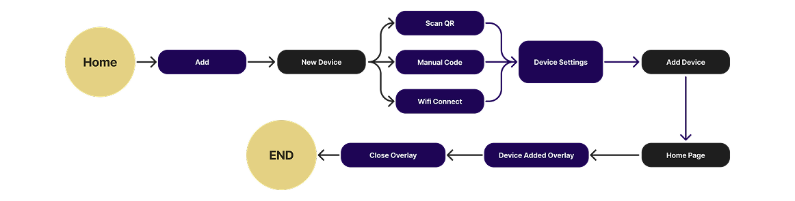
User Flow - 02 - Automating Security
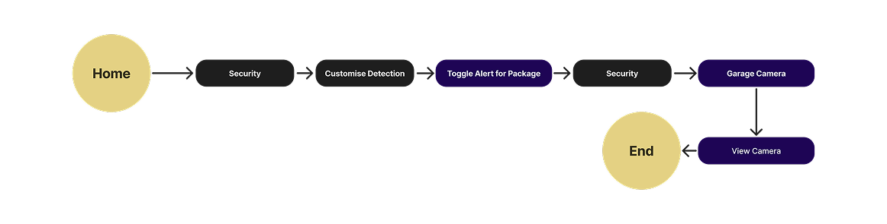
User Flow - 03 - Edit Schedule
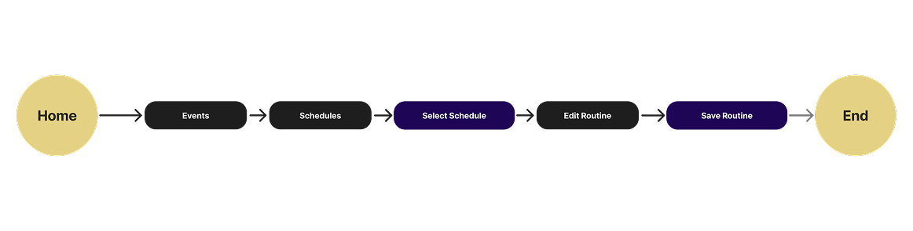
Wireframes
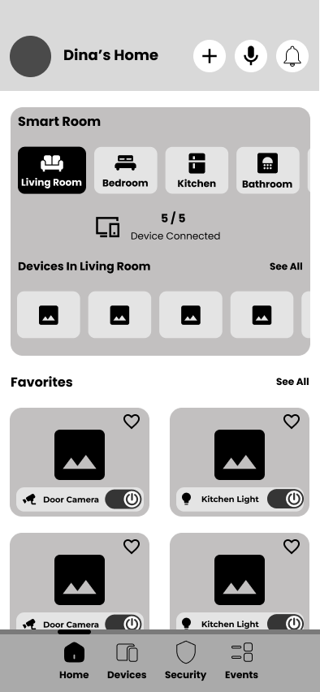
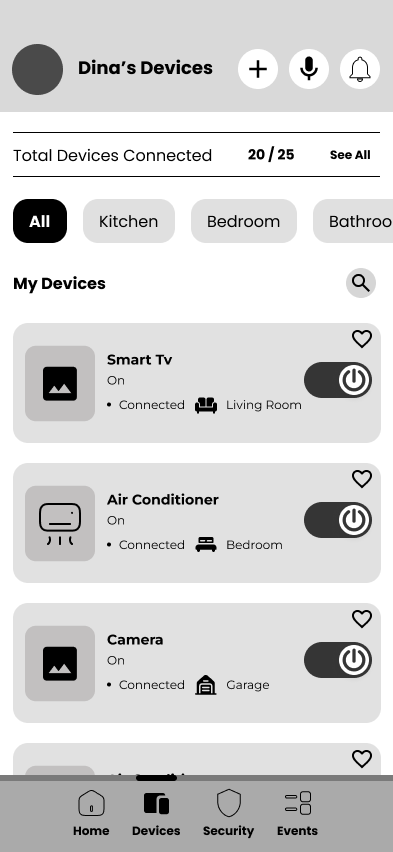
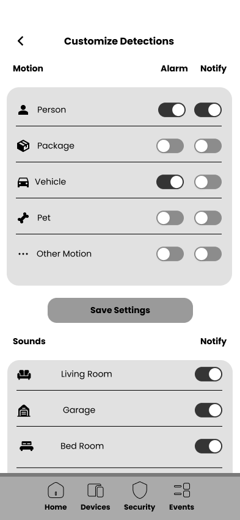
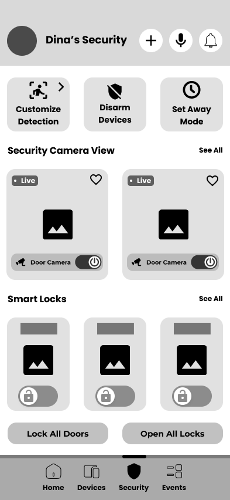
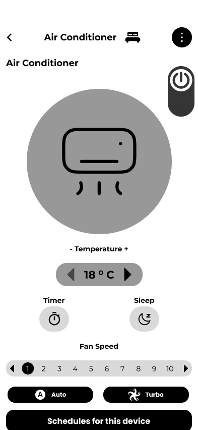
Design Execution
Style Guide - Color scheme & Typography
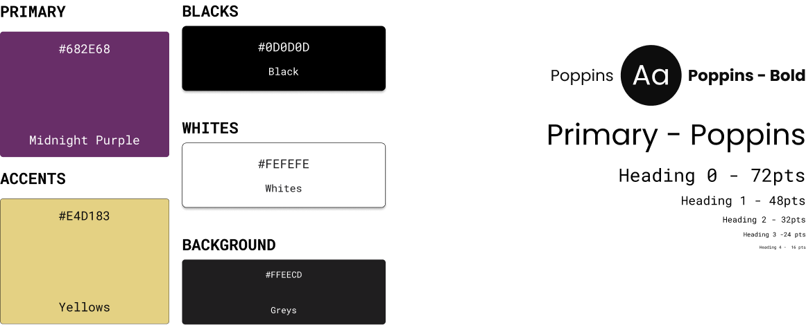
UI Component Library

UI / UX Design & Prototyping
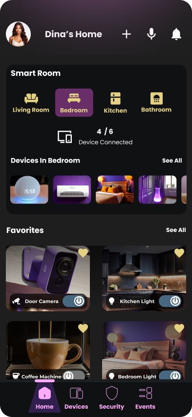
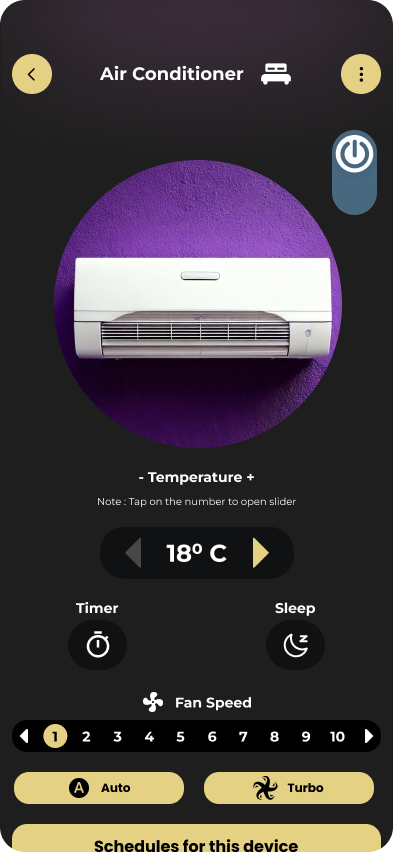
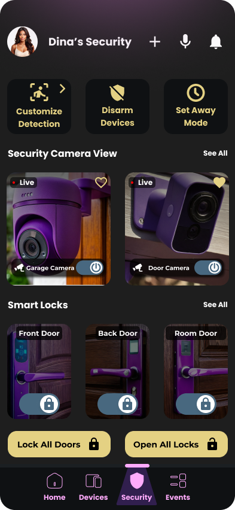
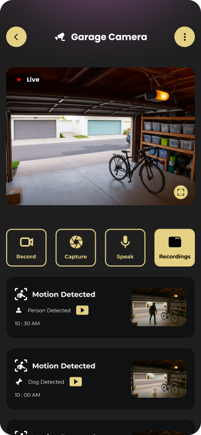
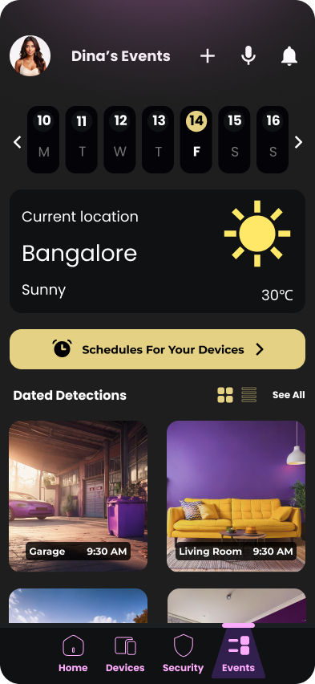
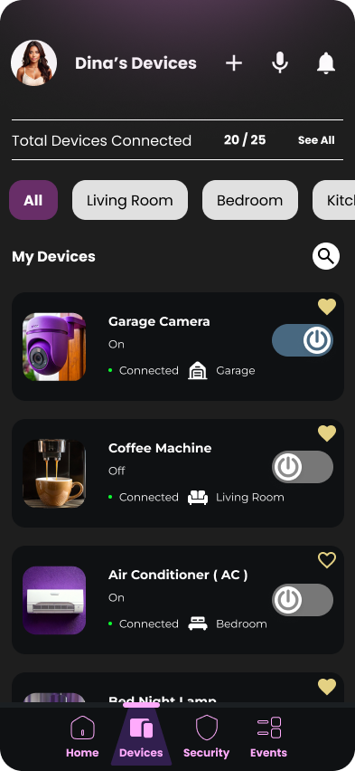
Prototyping
Usability Testing
The usability testing results showed strong task completion across all core interactions, with most users performing actions quickly and confidently. The most challenging area was editing routines, where a few users experienced delays or confusion, though all eventually completed the task. We compiled the performance data and noted specific user suggestions to refine clarity in multi-step flows such as device setup and routine editing. Overall, participants completed nearly every task successfully, with only minor prototype issues identified. These insights enabled me to refine the wireframes and confidently move forward with the final design.
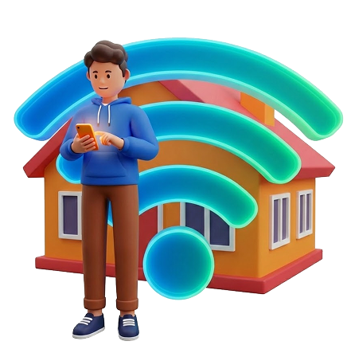
Benchmark Usability Testing
| Task | Benchmark Criteria | Observed Outcome | Benchmark Met |
|---|---|---|---|
| Turn on and adjust AC | ≤ 20 seconds, 90% success rate | Avg: 17 sec, All 6 completed successfully | Yes |
| Add new smart device | ≤ 1 minute, device added to correct room | Avg: 56 sec, One participant took 120 sec with errors | Partial |
| Edit “Good Morning” routine | Routine opens ≤ 5 sec, edits in ≤ 35 sec | Avg: 31 sec, 1 failure, some confusion reported | Partial |
| View garage camera and controls | ≤ 35 seconds including interaction | Avg: 31 sec, All completed successfully, 1 delay noticing button | Yes |
| Customize motion/sound detection | ≤ 30 seconds, 90% success rate | Avg: 27 sec, All completed successfully, minor confusion in 2 cases | Yes |
| Read new notification | ≤ 10 seconds to identify & interpret alert | Avg: 4.5 sec, All 6 completed easily without any confusion | Yes |
| Lock and unlock all doors | ≤ 15 seconds | Avg: 12 sec, All succeeded, one minor popup confusion reported | Yes |
Learning Outcome
This project strengthened my ability to design for real-world home automation challenges by balancing simplicity, control, and security. I learned how to streamline complex device interactions into intuitive flows, reduce user friction in multi-step tasks, and create a unified ecosystem that feels smart, safe, and effortless. The process reinforced the importance of clear feedback, accessible controls, and user-centred automation in building a reliable smart home experience.
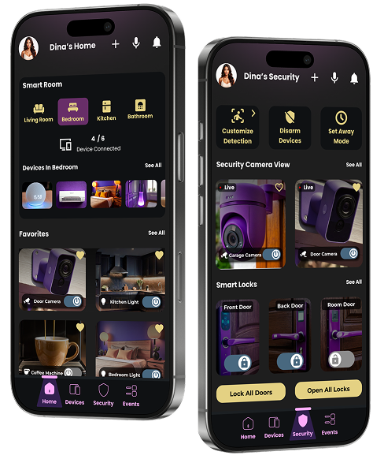